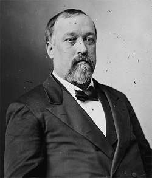
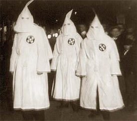

|
Unlike most other slave states, Kentucky, which had remained loyal during the
Civil War, emerged from the conflict with slavery still legal. Yet although it
had furnished sixty-four thousand troops to the federal, and only thirty
thousand to the Confederate army, the population, including the Unionists,
resented various antislavery measures. Kentuckians deplored the Emancipation
|

Benjamin H. Bristow
|
Proclamation, from which the state was exempt; the recruitment of black troops;
and the bill freeing the families of Union soldiers. Moreover, they were deeply
offended by the imposition of martial law in 1863. Nevertheless, the presence of
Union troops had already influenced many slaves to seek their freedom, so by the
spring of 1865 only about sixty-five thousand people remained in bondage.
The politics of the state were not conducive to emancipation. Strongly
racist, the whites were determined to keep the blacks in subjection, an attitude
particularly cultivated by the Democratic party, an organization consisting of
both Union and states rights elements, and led by Garrett Davis, Charles
Wickliffe, and W. F. Bullock. But not only the Democrats were hostile to
Congressional Reconstruction; many of the Unconditional Unionists and
Republicans, while supporting the ratification of the Thirteenth Amendment, were
often also opposed to increases in federal power. Represented by men like the
reformer Benjamin H. Bristow, they generally supported the moderate policies of
Andrew Johnson. A third grouping of conservatives like Thomas E. Bramlette, R.
T. Jacobs, and J. H. Harney complicated the political picture.
The results of this conservatism long affected developments in Kentucky.
Capturing the state legislature in 1865, the Democrats relieved former
insurgents of their disabilities and refused to ratify the Thirteenth Amendment,
so slavery did not come to an end until December 1865. Black testimony was not
admitted in the courts until 1874, and black suffrage had to await the passage
of the Fifteenth Amendment, which the state also rejected. Although Johnson
lifted martial law in October 1865, the continuing persecution of the blacks led
|

Kentucky Ku Klux Klansmen
|
to the extension of the jurisdiction of the Freedmen's Bureau to Kentucky.
Furious white reaction to this alleged violation of states rights resulted in
the strengthening of the Democratic party, and widespread Ku Klux Klan activity
harassed the freedmen. So strong were the conservatives and Democrats that it
was not until 1896 that a Republican presidential candidate, William McKinley,
was able to carry the state.
Unlike their counterparts in the deep South, African Americans in Kentucky
tended to become wage laborers instead of sharecroppers. Although some schools,
including a college, were established for them, their social and economic
position remained depressed. The state joined others in furthering the
construction of railroads; it established profitable distilleries and began to
exploit its timber and mining riches, but it remained largely agrarian. Although
it is not true that Kentucky simply revealed its long-standing Confederate
sympathies during the period of Reconstruction, it did manifest its opposition
to federal interference with the established rights of the states.
Source: Hans Trefousse, Historical Dictionary of Reconstruction
(Westport, CT: Greenwood Press, 1991), 121-22.
|